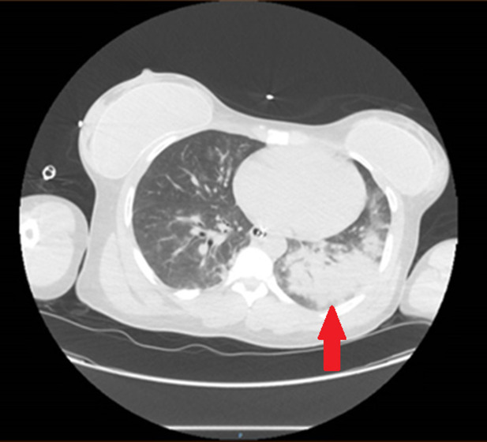
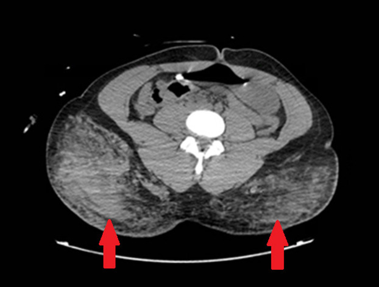
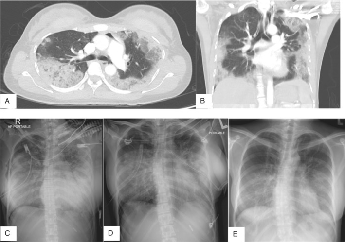
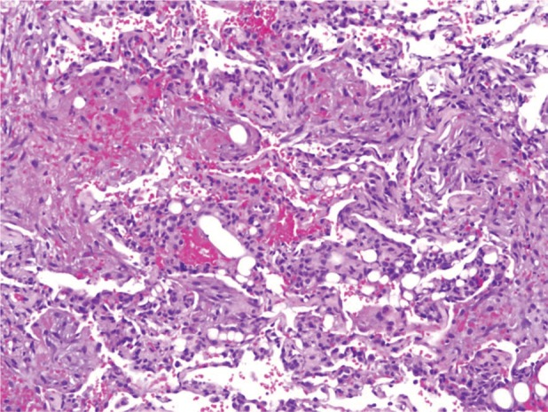

1698 — Hội chứng tắc mạch silicone (SES) sau tiêm mông: viêm phổi – xuất huyết phế nang – ARDS trong 72 giờ / Silicone embolism syndrome
Tags: pattern:mo-kinh-lan-toa pattern:xuat-huyet-phe-nang vung:phoi vung:mo-mem protocol:CT-nguc protocol:CTA-phoi score:Berlin-ARDS
Mức chắc chắn (certainty): tổng hợp y văn (literature synthesis) — ghép 1 ca tử vong sau tiêm silicone mông không phép (Clin Pract Cases Emerg Med 2024, PMC11166068, CC BY 4.0), 1 ca tử vong sau tiêm chất làm đầy mông (Egypt Heart J 2023, PMC10564681, CC BY 4.0), 1 ca sống sót + bảng 29 ca SES (Respirol Case Rep 2020, PMC7028525, CC BY 4.0), 1 ca SES tái phát phải ECMO (Respir Med Case Rep 2022, PMC8790489, CC BY-NC-ND) và 1 tổng quan scoping về silicone lỏng công nghiệp (Acta Cir Bras 2024, PMC11457952, CC BY 4.0). Bài 1688 đã phủ siliconoma mạn; bài này phủ biến chứng cấp trong 24–72 giờ, khác hoàn toàn về cơ chế và xử trí.
1. Tổng quan bệnh học – cơ chế hình ảnh
- Bản chất: silicone lỏng dùng trong thẩm mỹ là polydimethylsiloxane (PDMS). FDA không phê duyệt tiêm silicone khối lượng lớn để độn mông/vú; mọi ca "độn mông bằng silicone" trong y văn đều là thủ thuật ngoài luồng, không phép (PMC11166068, PMC11457952).
- Vì sao tắc mạch: kim tiêm đưa PDMS dưới áp lực cao vào mô mỡ mông — nơi có đám rối tĩnh mạch lớn. Khi đầu kim nằm trong lòng mạch (hoặc mô bị phá hủy tạo đường vào), silicone vào thẳng tĩnh mạch → buồng tim phải → tuần hoàn phổi. Giọt silicone lớn hơn mao mạch phổi (~7–10 µm) nên bít cơ học mao mạch, đồng thời hoạt hóa bạch cầu trung tính và đại thực bào phế nang → giải phóng protease, gốc tự do → tổn thương nội mô mao mạch → phù và xuất huyết phế nang (PMC7028525).
- TẠI SAO hình ảnh là "mờ kính lan tỏa + đông đặc phụ thuộc": phế nang bị lấp một phần bởi dịch phù/máu → tia X chỉ giảm attenuate một phần → ground-glass; vùng phụ thuộc (thấp, sau) ứ máu và dịch nhiều hơn do trọng lực và tưới máu cao hơn → đông đặc (consolidation). Đây là cùng một quá trình với ARDS, không phải hai bệnh.
- Đường đến não và mắt: nếu có shunt phải–trái (PFO hoặc shunt trong phổi), giọt silicone đi vào tuần hoàn hệ thống → co giật, giảm tri giác (PMC11166068) và bệnh võng mạc kiểu Purtscher (PMC8790489) — dấu hiệu ngoài phổi có thể là manh mối duy nhất khi phổi chưa mờ.
- Thời gian khởi phát (số nằm lòng):
- Thể tiêm (injection): 4 giờ – 72 giờ, đa số trong 24 giờ đầu (PMC7028525, PMC11166068, PMC10564681).
- Thể implant/vật liệu tồn lưu: có thể muộn 2 tháng – 18 năm (bảng 29 ca, PMC7028525) — nên không loại trừ SES vì "tiêm đã lâu".
- Liều và độ nặng: ca sống sót nhận ~500 mL mỗi bên mông (PMC7028525); ca tử vong chỉ kịp nhận 6 lọ × 3–5 mL rồi dừng vì triệu chứng (PMC10564681) — nghĩa là không có ngưỡng thể tích an toàn. Tỉ lệ tử vong trong bảng tổng hợp: 4/29 ca (~14%), nhưng các ca nặng được báo cáo chọn lọc nên tỉ lệ thật còn cao hơn (PMC7028525).
- Sinh hóa – khí máu của ca điển hình: PaO₂/FiO₂ 73 (ARDS nặng), pH 7.24, lactate tăng (PMC11166068); ca thứ hai: SpO₂ 60% khí trời, RVSP 53 mmHg, CVP 18 mmHg, sốc 70/40 mmHg (PMC10564681).
2. Mẫu hình + chẩn đoán phân biệt theo vị trí (gamut)
- Mẫu hình chính: bệnh nhân khỏe mạnh, sau thủ thuật thẩm mỹ 0–72 giờ → khó thở – đau ngực – ho ra máu – sốt – co giật/giảm tri giác; CT ngực: mờ kính lan tỏa hai bên + đông đặc phụ thuộc, không có bít tắc động mạch phổi lớn; CT vùng tiêm: dày/tụ dịch mỡ dưới da mông ± khí dưới da.
- Gamut theo cơ chế (bệnh nhân sau thủ thuật thẩm mỹ, khó thở cấp):
- Tắc mạch silicone (SES) — tiêm silicone lỏng; khởi phát giờ – 72 giờ; GGO + xuất huyết phế nang.
- Tắc mạch mỡ (fat embolism syndrome, FES) — mỡ tự thân (hút mỡ, ghép mỡ mông); tam chứng giảm oxy – rối loạn tri giác – ban xuất huyết điểm; CT cũng GGO nhưng có nguồn mỡ tự thân, không có silicone.
- ARDS do nhiễm trùng — áp-xe mông, mô hoại tử, nhiễm khuẩn huyết sau tiêm không vô khuẩn; sốt cao, bạch cầu/PCT tăng, đông đặc không đối xứng.
- Phù phổi cấp do tim — truyền dịch quá nhiều, bệnh tim ẩn; tim to, tràn dịch màng phổi, đường Kerley, đáp ứng lợi tiểu.
- Xuất huyết phế nang lan tỏa (DAH) — viêm mạch, Goodpasture, kháng đông; ho ra máu + thiếu máu, không liên quan thủ thuật.
- Thuyên tắc phổi (PE) — huyết khối thật; CTPA có khuyết thuốc trong lòng mạch, phổi thường ít thay đổi nhu mô; SES có thể kèm PE nhỏ (PMC11166068) nên vẫn phải chụp CTPA.
- Hít sặc / dập phổi — bối cảnh khác, đông đặc theo thùy.
3. Bảng so sánh phân biệt (ma trận đối chiếu)
| Thực thể (entity) | Hình ảnh điển hình | Chốt vào (rule-in) | Chốt loại (rule-out) | Gợi ý xác nhận |
|---|---|---|---|---|
| SES | CT: GGO lan tỏa hai bên + đông đặc phụ thuộc; CT vùng tiêm: dày mỡ/dịch, khí dưới da; có thể giãn thất phải | Tiêm silicone lỏng 0–72 giờ + giảm oxy + GGO lan tỏa, không có ổ nhiễm khuẩn rõ | Đông đặc một thùy + sốt mủ + bạch cầu tăng nhiều → nghĩ nhiễm trùng; CTPA có khuyết thuốc lớn → PE là chính | BAL: đại thực bào chứa thể vùi silicone; sinh thiết: lỗ hổng không khúc xạ trong phế nang (PMC7028525) |
| Tắc mạch mỡ (FES) | GGO/đông đặc hai bên, đối xứng, thường sau 24–72 giờ; MRI não: "starfield" | Gãy xương dài/hút mỡ + ban điểm + rối loạn tri giác | Không có nguồn mỡ tự thân, chỉ có silicone | Lâm sàng (Gurd), không có xét nghiệm đặc hiệu |
| ARDS nhiễm trùng | Đông đặc không đối xứng, có ổ áp-xe/hang, tràn dịch | Sốt + ổ nhiễm khuẩn tại chỗ tiêm + cấy máu/dịch dương | GGO lan tỏa đối xứng sau tiêm < 72 giờ, không ổ mủ | Cấy máu, PCT, chọc hút ổ mủ |
| Phù phổi do tim | Tim to, tràn dịch màng phổi hai bên, đường Kerley, GGO vùng rốn phổi | BNP tăng + đáp ứng lợi tiểu, tiền sử suy tim | Phổi bình thường kích thước tim, không tràn dịch, khởi phát ngay sau tiêm | Siêu âm tim, BNP |
| DAH | GGO/đông đặc lan tỏa, không đối xứng, có thể mờ mới – cũ chồng | Ho ra máu + Hb giảm, bệnh hệ thống/kháng đông | Không thiếu máu, không ho máu, bối cảnh tiêm | BAL hemosiderin, kháng thể (ANCA, anti-GBM) |
| PE | Khuyết thuốc trong động mạch phổi; nhu mô bình thường hoặc nhồi máu hình nêm | CTPA dương tính | CTPA âm tính không loại trừ SES — SES là bệnh vi mạch | CTPA, D-dimer, siêu âm tim |
4. Protocol chụp + hệ phân độ/điểm chuẩn hóa
- CT ngực không cản quang lát mỏng 1 mm để đánh giá nhu mô (GGO, xuất huyết, tràn khí) — không cần cản quang để thấy tổn thương phổi.
- CTPA (bơm thuốc, 1–1,5 mm) bắt buộc khi nghi SES: vừa loại trừ PE thật, vừa đánh giá giãn thất phải. Ca SES có thể kèm PE bán phần (PMC11166068) nên CTPA âm tính không làm chẩn đoán SES sai.
- Mở rộng FOV xuống mông trong cùng lần chụp: tìm dày mỡ, tụ dịch, khí dưới da, ổ áp-xe tại chỗ tiêm — dấu hiệu quyết định phân biệt SES với nhiễm trùng và giải thích khí dưới da (PMC11166068).
- Không có RADS riêng cho SES. Phân độ theo Berlin ARDS: khởi phát ≤ 7 ngày, mờ hai bên không giải thích hoàn toàn bởi tim/phổi, PEEP ≥ 5 cmH₂O, và P/F: nhẹ 200–300, trung bình 100–200, nặng < 100.
- Điều trị (để bác sĩ CĐHA trả lời đúng câu hỏi của hồi sức): hỗ trợ là chính — thông khí bảo vệ phổi (Vt ~6 mL/kg cân nặng lý tưởng, PEEP đủ), corticoid liều cao không có bằng chứng chắc (bảng ca dùng methylprednisolone 125 mg mỗi 6 giờ, kết cục hỗn hợp), ECMO khi ARDS nặng thất bại với thông khí (PMC7028525, PMC8790489). Không phẫu thuật lấy silicone trong pha cấp — nguy cơ hệ thống cao, không cải thiện sống còn (PMC7028525).
- Theo dõi: tràn khí tái phát là biến chứng đã ghi nhận (2 lần trong 1 ca, PMC7028525) → X-quang/CT lặp khi xấu đi; theo dõi thất phải bằng siêu âm tim.
flowchart TD
A[Tiêm silicone mông 0-72 giờ + khó thở hoặc co giật] --> B[CT ngực lát mỏng + CTPA + FOV mông]
B --> C{CTPA có khuyết thuốc lớn?}
C -->|Có| D[Điều trị PE song song, vẫn tìm SES]
C -->|Không| E{GGO lan tỏa + đông đặc phụ thuộc?}
E -->|Có| F[SES - viêm phổi do silicone]
E -->|Không| G[Tìm nhiễm trùng, phù tim, hít sặc]
F --> H{P/F và pH}
H -->|P/F dưới 80 hoặc pH dưới 7.25| I[ECMO - chuyển trung tâm]
H -->|P/F 80-300| J[Thông khí bảo vệ phổi + corticoid cân nhắc]
5. Biến thể bình thường và cạm bẫy
- CT sớm có thể BÌNH THƯỜNG. Ca 49 tuổi có CT ngực âm tính hoàn toàn lúc nhập viện, chỉ giãn thất phải; tổn thương phổi xuất hiện sau đó (PMC8790489). → CT âm tính trong 24 giờ đầu không loại trừ SES; phải lặp khi lâm sàng xấu.
- Khí dưới da mông do chính mũi tiêm (không vô khuẩn, bơm áp lực) bắt chước viêm cân mạc hoại tử → dễ bị mổ dẫn lưu vô ích. Phân biệt bằng bối cảnh tiêm + không có mủ, không hoại tử da, không độc lực toàn thân kiểu nhiễm khuẩn (PMC11166068).
- Gọi nhầm là "viêm phổi cộng đồng": bệnh nhân sốt + thâm nhiễm hai bên → kháng sinh, bỏ qua tiền sử thủ thuật. Tiền sử phải hỏi trực tiếp ("có tiêm/độn mông ở đâu không?"), vì bệnh nhân không tự khai thủ thuật ngoài luồng (PMC11166068).
- Bẫy "PE âm tính là yên tâm": SES là bệnh vi mạch, CTPA âm tính là bình thường trong SES; kết luận sai dẫn tới không chuyển ECMO kịp.
- Tràn khí khi thở máy: PEEP cao + tổn thương phế nang → tràn khí màng phổi, có ca 2 lần (PMC7028525) → luôn so phim cũ và tìm tràn khí mới khi oxy hóa xấu đột ngột.
- Thể muộn: SES có thể xuất hiện tháng – năm sau implant/tiêm (bảng 29 ca: 2 tháng đến 18 năm) — không loại trừ theo thời gian.
- Dấu hiệu ngoài phổi: co giật, giảm tri giác, giảm thị lực kiểu Purtscher — nếu chỉ nhìn phổi sẽ bỏ sót chẩn đoán (PMC11166068, PMC8790489).
6. Tự lượng giá — Blind Quiz
Ca 1 — Nữ 28 tuổi, khỏe mạnh, đột ngột đau bụng rồi co giật, SpO₂ 70% khí trời. Người nhà khai "đi dự tiệc làm đẹp" trong 24 giờ qua.

- Câu hỏi: Mô tả tổn thương nhu mô? Cần chụp thêm vùng nào trong cùng lần chụp, và vì sao? Ba chẩn đoán phân biệt?
Bấm để hiện đáp án (findings + chẩn đoán)
- Findings: mờ kính + đông đặc lan tỏa hai bên, nặng hơn bên trái, vùng phụ thuộc; không có khuyết thuốc lớn kiểu PE.
- Chẩn đoán: hội chứng tắc mạch silicone (SES) sau tiêm mông không phép — cơ chế: silicone vào tĩnh mạch → bít mao mạch phổi → xuất huyết phế nang/ARDS.
- Chụp thêm: mông trong cùng FOV — thấy dày mỡ, tụ dịch và khí dưới da tại chỗ tiêm (dấu hiệu xác nhận bối cảnh).
- Phân biệt: ARDS nhiễm trùng (sốt, ổ mủ), tắc mạch mỡ (có nguồn mỡ tự thân), phù phổi do tim (tim to, BNP).
- Nguồn: Clin Pract Cases Emerg Med 2024, PMC11166068, CC BY 4.0.

Ca 2 — Nữ 30 tuổi, 1 tuần sau tiêm ~500 mL silicone mỗi bên mông, ho – khó thở – sốt 3 ngày, SpO₂ 90%.

- Câu hỏi: Vì sao đây vẫn là SES dù khởi phát sau 1 tuần? Dấu hiệu nào trên phim giúp loại trừ phù phổi do tim? Biến chứng nào phải cảnh báo trước khi thở máy?
Bấm để hiện đáp án (findings + chẩn đoán)
- Findings: (A, B) mờ kính lan tỏa hai bên + đông đặc vùng phụ thuộc; (C) X-quang mờ phế nang lan tỏa; (D) tràn khí màng phổi phải đã đặt ống; (E) cải thiện sau 6 tuần, còn lưới mờ tồn dư.
- Vì sao vẫn SES: thể tiêm khởi phát 4 giờ – 72 giờ là điển hình, nhưng tổn thương có thể tiến triển/đến muộn; bảng 29 ca ghi nhận khởi phát 2 tháng đến 18 năm ở thể implant. Bối cảnh tiêm + hình ảnh + sinh thiết (lỗ hổng không khúc xạ trong phế nang) là chốt.
- Loại trừ phù tim: không tim to, không tràn dịch màng phổi, không đường Kerley, tổn thương lan tỏa đối xứng — phù tim thường vùng rốn phổi và đáp ứng lợi tiểu.
- Cảnh báo: tràn khí màng phổi — ca này bị 2 lần (phải rồi trái) trong 4 tuần thở máy; PEEP cao + phế nang tổn thương là nguy cơ.
- Nguồn: Respirol Case Rep 2020, PMC7028525, CC BY 4.0.
Ca 3 — Mảnh sinh thiết phổi xuyên phế quản ở bệnh nhân SES.

- Câu hỏi: Mô tả 3 dấu hiệu mô bệnh? Vì sao mô bệnh lại "vô khúc xạ" khi soi?
Bấm để hiện đáp án (findings + chẩn đoán)
- Findings: phế nang chứa hồng cầu (xuất huyết trong phế nang), đại thực bào, và cấu trúc dạng lỗ hổng không khúc xạ (non-refractile vacuole-like structures) — silicone không nhuộm, không khúc xạ ánh sáng.
- Ý nghĩa: đây là bằng chứng mô học của viêm phổi do silicone; BAL tìm đại thực bào chứa thể vùi cũng có giá trị.
- Cạm bẫy: mô bệnh không đặc hiệu nếu chỉ thấy xuất huyết — phải hỏi tiền sử và đối chiếu hình ảnh.
- Nguồn: Respirol Case Rep 2020, PMC7028525, CC BY 4.0.
Bài liên quan chéo
- 1688 – Siliconoma lan xa ngoài vùng vú (thể mạn, khác SES cấp)
- 1686 – Hạch nách chứa silicone
- 033 – Phù phổi & ARDS (định nghĩa Berlin, hình ảnh ARDS)
- 098 – Barotrauma & tràn khí áp lực (biến chứng thở máy)
- 090 – Bỏng hít đường thở (chẩn đoán phân biệt tổn thương phổi do hít)
- 1720 – Ngộ độc cyanid do khói lửa (bệnh cảnh "phổi bình thường + toan chuyển hóa")
Không dùng để chẩn đoán độc lập khi chưa có người hướng dẫn.